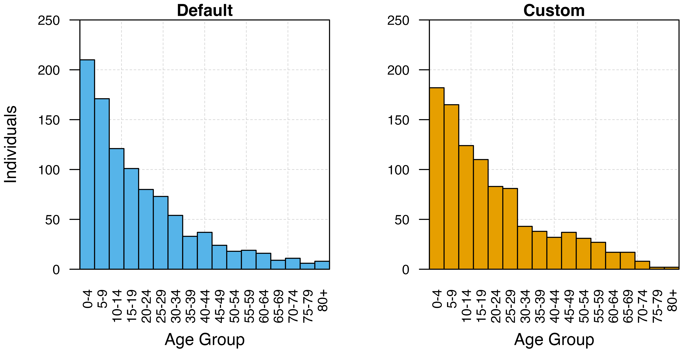

Demography
Demography.Rmd
suppressPackageStartupMessages(library(ggplot2))
library(malariasimulation)Parameterisation
We are going to create a scenario where we track severe prevalence for 5 years.
year <- 365
month <- 30
sim_length <- 5 * year
human_population <- 1000
starting_EIR <- 5
age_min <- seq(0, 80, 5) * 365
age_max <- seq(5, 85, 5) * 365
simparams <- get_parameters(
list(
human_population = human_population,
age_group_rendering_min_ages = age_min,
age_group_rendering_max_ages = age_max
)
)
simparams <- set_equilibrium(simparams, starting_EIR)Custom demography
We can set a custom demography:
demography_params <- simparams
# Set a flat demography
ages <- round(c(
.083333, 1, 5, 10, 15, 20, 25, 30, 35, 40, 45, 50, 55, 60, 65, 70, 75, 80,
85, 90, 95, 200) * year)
deathrates <- c(
.4014834, .0583379, .0380348, .0395061, .0347255, .0240849, .0300902,
.0357914, .0443123, .0604932, .0466799, .0426199, .0268332, .049361,
.0234852, .0988317, .046755, .1638875, .1148753, .3409079, .2239224,
.8338688) / 365
demography_params <- set_demography(
demography_params,
agegroups = ages,
timesteps = 0,
deathrates = matrix(deathrates, nrow = 1)
)Let’s run the simulations
# run and combine the outputs
exp_output <- run_simulation(sim_length, simparams)
exp_output$run <- 'exponential'
custom_output <- run_simulation(sim_length, demography_params)
custom_output$run <- 'custom'and now we can compare the age distributions in the populations in year 5:
# wrangle outputs
output <- rbind(exp_output, custom_output)
output <- output[output$timestep == 5 * 365,]
# A function to extract the age variables and convert to long format
convert_to_long <- function(age_min, age_max, output){
output <- lapply(
seq_along(age_min),
function(i) {
data.frame(
age_lower = age_min[[i]],
age_upper = age_max[[i]],
n = output[,paste0('n_age_', age_min[[i]], '_',age_max[[i]])],
age_mid = (age_min[[i]] + (age_min[[i]] - age_max[[i]]) / 2) / 365,
run = output$run,
timestep = output$timestep)
}
)
output <- do.call("rbind", output)
}
output <- convert_to_long(age_min, age_max, output)
# Plot the age distributions
ggplot(output, aes(x = age_mid, y = n)) +
geom_bar(stat = "identity") +
theme_bw() +
facet_wrap(~ run)
We can also specify time-varying death rates to capture a dynamic demography
dynamic_demography_params <- simparams
# Set a flat demography
ages <- round(c(
.083333, 1, 5, 10, 15, 20, 25, 30, 35, 40, 45, 50, 55, 60, 65, 70, 75, 80,
85, 90, 95, 200) * year)
deathrates <- c(
.4014834, .0583379, .0380348, .0395061, .0347255, .0240849, .0300902,
.0357914, .0443123, .0604932, .0466799, .0426199, .0268332, .049361,
.0234852, .0988317, .046755, .1638875, .1148753, .3409079, .2239224,
.8338688) / 365
# Let's increase the death rates in some age groups
deathrates_changed <- deathrates
deathrates_changed[3:6] <- deathrates_changed[3:6] * 10
dynamic_demography_params <- set_demography(
dynamic_demography_params,
agegroups = ages,
timesteps = c(0, 2 * 365),
deathrates = matrix(c(deathrates, deathrates_changed), nrow = 2, byrow = TRUE)
)
dynamic_demography_output <- run_simulation(sim_length, dynamic_demography_params)
# wrangle outputs
dynamic_demography_output <- dynamic_demography_output[dynamic_demography_output$timestep %in% (1:5 * 365),]
dynamic_demography_output$run <- "dynamic"
dynamic_demography_output <- convert_to_long(age_min, age_max, dynamic_demography_output)
# Plot the age distributions each year
ggplot(dynamic_demography_output, aes(x = age_mid, y = n)) +
geom_bar(stat = "identity") +
theme_bw() +
facet_wrap(~ timestep / 365, ncol = 5)